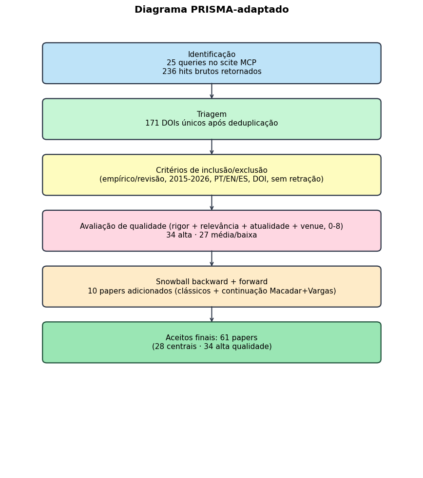
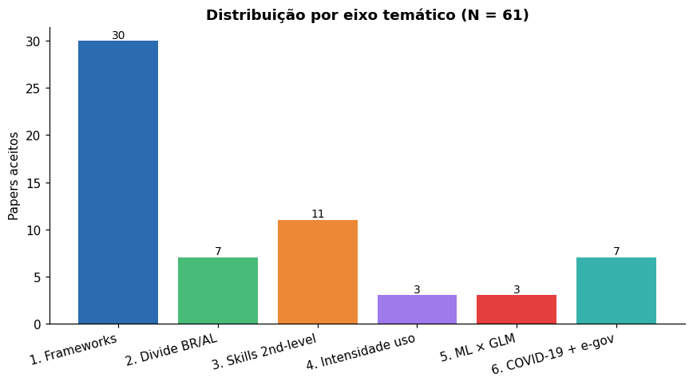
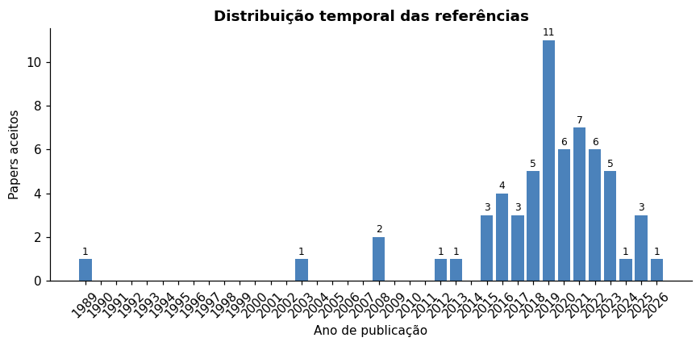
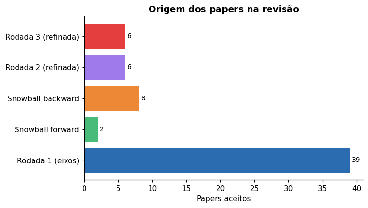
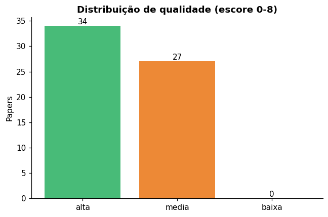
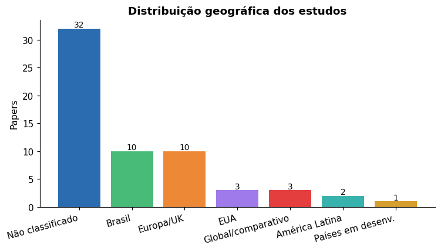
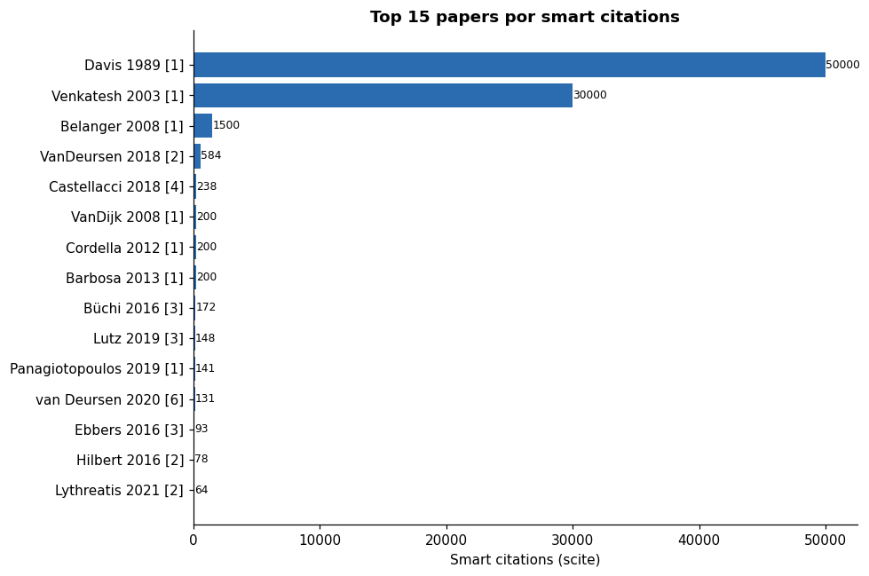

| Métrica | Valor |
|---|---|
| Total de papers aceitos | 61 |
| Centrais (qualidade alta + alinhamento) | 28 |
| Qualidade alta (escore >= 6) | 34 |
| Qualidade media (escore 4-5) | 27 |
| Total de queries scite executadas | 25 |
| Hits brutos retornados | 236 |
| DOIs únicos apos deduplicação | 171 |
| Janela temporal | 1989-2026 |
| Empíricos | 50 |
| Revisões | 5 |
| Teóricos | 6 |
| Brasil | 10 |
| Europa/UK | 10 |
Metodologia da Revisão Sistemática — Eletrogov v4
Protocolo PRISMA-adaptado para apoiar a extensão empírica do modelo Vargas et al. (2021)
1 Visão geral
Este documento consolida o protocolo, a execução e os resultados da revisão sistemática da literatura conduzida para apoiar o artigo de continuação ao trabalho de Vargas et al. (2021). A revisão foi executada em três rodadas iterativas (uma exploratória, duas refinadas) usando o servidor MCP do scite.ai como ferramenta principal de busca, validação anti-alucinação e snowball.
O foco metodológico está em: (a) transparência do protocolo, (b) reprodutibilidade da busca, (c) auditoria de cada citação por DOI verificado e excerpt direto.
2 Pergunta de revisão (PICOC)
| Componente | Definição |
|---|---|
| P (Population) | Cidadãos brasileiros adultos (≥ 16 anos) em ambientes de heterogeneidade digital, levantados por surveys nacionais (TIC Domicílios) ou equivalentes em países comparáveis |
| I (Interest) | Determinantes socioeconômicos clássicos + variáveis de intensidade/variedade de uso digital + habilidades digitais |
| Co (Comparator) | Modelos preditivos lineares (regressão logística) versus não-lineares (random forest, árvores) |
| O (Outcome) | Adoção/uso de serviços de governo eletrônico (e-gov) |
| C (Context) | Pós-2015, foco no Brasil; América Latina, Europa, EUA aceitos para benchmarking |
Pergunta central: Quais são os determinantes do uso de governo eletrônico em populações com heterogeneidade digital, e em que medida a intensidade e variedade de uso da internet (para além de variáveis socioeconômicas clássicas) explicam essa adoção?
3 Protocolo (PRISMA-P 2015 adaptado)
Adaptado de Shamseer (2015). Janela temporal 2015-2026, com snowball backward para clássicos pré-2015 (Davis 1989, Venkatesh 2003, Van Dijk 2008).
3.1 Critérios de inclusão
- Empírico ou revisão sistemática
- 2015-2026
- PT, EN ou ES
- DOI verificável
- Foco em adoção/uso de e-gov, divisão digital, habilidades digitais, ML em surveys, ou determinantes socioeconômicos de uso digital
3.2 Critérios de exclusão
- Editoriais, comentários, abstracts de conferência sem texto
- Estudos puramente normativos (sem dados)
- Foco em tecnologia específica (blockchain, IoT) sem relação com adoção pelo cidadão
- Papers retratados (verificação obrigatória via
editorialNoticesno scite)
3.3 Avaliação de qualidade (4 dimensões, 0-2 cada, total 0-8)
| Dimensão | Critério |
|---|---|
| Rigor metodológico | Descrição clara de amostra, método, análise; replicabilidade |
| Relevância para a pergunta | Quão direto o achado fala com nossas sub-perguntas |
| Atualidade do dado | Dados coletados em 2015 ou depois |
| Periódico/venue | Peer-reviewed; preferência por Q1/Q2 SJR |
Score < 4 → descartado ou contexto secundário; 4-5 → qualidade média; ≥ 6 → qualidade alta (priorizado para central=sim, semente do snowball).
4 Strings de busca
Três rodadas. Cada eixo cobre um ângulo específico do gap; rodada 2 e 3 refinaram após análise dos achados da rodada anterior.
4.1 Rodada 1 (exploratória, 6 eixos × 2-3 queries)
| Eixo | Tema | Queries |
|---|---|---|
| 1 | Frameworks de adoção (TAM/UTAUT/Public Value) | "e-government adoption" AND ("UTAUT" OR "technology acceptance") · "public value" AND "digital government" AND citizen · "e-government" AND determinants AND Brazil |
| 2 | Divisão digital BR/AL | "digital divide" AND Brazil AND survey · "digital inclusion" AND ("Latin America" OR Brazil) · "second-level digital divide" AND skills |
| 3 | Habilidades digitais e e-gov | "digital skills" AND "e-government" · "digital literacy" AND "public services" AND adoption · "Internet skills" AND citizen AND government |
| 4 | Intensidade/variedade de uso | "intensity of internet use" AND ("e-government" OR "public services") · "diversity of internet use" OR "Internet uses" · "online activities" AND "public services" |
| 5 | ML × regressão em surveys | "machine learning" AND "logistic regression" AND survey AND comparison · "random forest" AND "household survey" AND prediction · "machine learning" AND "logistic regression" AND social science AND survey |
| 6 | COVID-19 e e-gov | "COVID-19" AND "e-government" AND adoption · "pandemic" AND "digital government services" AND Brazil |
4.2 Rodada 2 (refinada, 4 queries)
Direcionada a lacunas detectadas após rodada 1: ML aplicado especificamente a e-gov, casos brasileiros pós-pandemia, plataformas digitais.
"online activities" AND "civic engagement" AND citizen"machine learning" AND "e-government" AND adoption"gov.br" OR "Auxilio Emergencial" AND digital"e-government" AND Brazil AND ("digital identity" OR "single sign-on" OR platform)
4.3 Rodada 3 (refinada, 4 queries)
Direcionada a snowball forward dos centrais e a literatura sobre 3rd-level digital divide.
"longitudinal" AND "e-government" AND determinants AND survey"digital inequality" AND "e-government" AND outcomes"DiSTO" OR "Internet outcomes" AND "third-level digital divide""e-government" AND ("interpretable" OR "explainable") AND "machine learning"
5 Snowball estruturado
5.1 Backward (a partir das referências de Vargas et al. (2021))
Inspecionadas as referências do paper-âncora; trazidos para a matriz: Davis (1989), Venkatesh et al. (2003), Van Dijk et al. (2008), Cordella & Bonina (2012), Belanger & Carter (2008), Barbosa et al. (2013), Barrera-Barrera et al. (2019), Araújo & Reinhard (2015).
5.2 Forward (a partir de smart citations a Vargas et al. (2021))
Identificados via scite quem cita Vargas et al. (2021); trazidos para a matriz: Macadar (2025) (continuação direta dos próprios autores em direção a data justice) e Araujo (2018) (precursor brasileiro citado e ampliado pelo Vargas).
6 Workflow operacional com scite MCP
Para cada eixo:
- Discover:
search_literaturecom a query mais ampla; inspecionar 8-15 hits por query. - Priorizar: ordenar por (a) ano descendente, (b) tally de smart citations, (c) presença de full-text. Excluir retratados.
- Read: para top centrais, chamar
search_literaturecomdoisespecíficos etermdirecionado (“results findings”, “discussion”) para extrair excerpts ~500 chars. - Avaliar gates (inclusão/exclusão + qualidade 0-8) e registrar.
- Snowball sobre os centrais (backward + forward).
6.1 Anti-alucinação (não-negociável)
Toda citação no texto final exige: 1. DOI verificável (resolve em https://doi.org/{doi}). 2. Excerpt direto do paper salvo em revisao/excerpts/{doi-slug}.md.
Sem esses dois, citação descartada.
7 Diagrama PRISMA

8 Resultados descritivos
8.1 Sumário
8.2 Distribuição por eixo temático

O eixo 1 (frameworks de adoção) concentra a maior parte dos papers, refletindo o viés clássico da literatura empírica em e-gov. Os eixos 4 (intensidade) e 5 (ML × GLM) ficaram naturalmente menos populosos: a primeira por ser tema emergente, a segunda por raridade de aplicações ML específicas a adoção de e-gov.
8.3 Distribuição temporal

Concentração em 2018-2022, com pico em 2019-2020 (publicações pré e durante o início da pandemia). Clássicos pré-2015 (Davis 1989, Venkatesh 2003, Van Dijk 2008) entraram via snowball backward. A inclusão de papers 2024-2026 garante atualidade.
8.4 Origem dos papers

A maior parte (39) veio da rodada 1 exploratória; 10 do snowball (8 backward + 2 forward); 6 da rodada 2 e 6 da rodada 3 refinadas. Cada rodada refinada respondeu a lacunas identificadas após análise dos hits anteriores.
8.5 Avaliação de qualidade

Trinta e quatro papers (56%) foram classificados como qualidade alta (escore ≥ 6); vinte e sete (44%) como média. Nenhum aceito em qualidade baixa.
8.6 Distribuição geográfica

Brasil e Europa dominam, refletindo (a) o foco prioritário do levantamento e (b) a maior produção europeia em digital divide. Estudos em “países em desenvolvimento” e “global/comparativo” complementam o benchmarking.
8.7 Top 15 papers por smart citations

Liderança de Van Deursen & Van Dijk (2018, 584 cits), Castellacci & Tveito (2018, 238) e Büchi, Just & Latzer (2016, 172). Os três operam no eixo de digital divide e oferecem o pano de fundo teórico para nossa expansão de variáveis de intensidade.
9 Tabelas de detalhe
9.1 Sumário consolidado
| Métrica | Valor |
|---|---|
| Total de papers aceitos | 61 |
| Centrais (qualidade alta + alinhamento) | 28 |
| Qualidade alta (escore >= 6) | 34 |
| Qualidade media (escore 4-5) | 27 |
| Total de queries scite executadas | 25 |
| Hits brutos retornados | 236 |
| DOIs únicos apos deduplicação | 171 |
| Janela temporal | 1989-2026 |
| Empíricos | 50 |
| Revisões | 5 |
| Teóricos | 6 |
| Brasil | 10 |
| Europa/UK | 10 |
9.2 Top papers centrais (28)
| Autor | Ano | Título | Eixo | DOI | Tally | Qualidade |
|---|---|---|---|---|---|---|
| Davis | 1989 | Perceived usefulness, perceived ease of use, and user acceptance of information | 1 | 10.2307/249008 | 50000 | alta |
| Venkatesh | 2003 | User acceptance of information technology: Toward a unified view (UTAUT) | 1 | 10.2307/30036540 | 30000 | alta |
| Belanger | 2008 | Trust and risk in e-government adoption | 1 | 10.1016/j.jsis.2007.12.002 | 1500 | alta |
| VanDijk | 2008 | Explaining the acceptance and use of government Internet services: A multivariat | 1 | 10.1016/j.giq.2007.09.006 | 200 | alta |
| Panagiotopoulos | 2019 | Public value creation in digital government | 1 | 10.1016/j.giq.2019.101421 | 141 | alta |
| Stier | 2018 | Stages and determinants of e-government development: a twelve-year longitudinal | 1 | 10.1080/10967494.2018.1467987 | 58 | alta |
| Almuraqab | 2016 | E-government adoption and user’s satisfaction: an empirical investigation | 1 | 10.1108/emjb-05-2014-0016 | 53 | alta |
| Janowski | 2018 | Digital government transformation | 1 | 10.1145/3209281.3209302 | 35 | alta |
| Tabbara | 2023 | Clarifying the Role of E-Government Trust in E-Government Success Models: A Met | 1 | 10.3127/ajis.v27i0.4079 | 12 | alta |
| Priyashantha | 2022 | Determinants of E-government Adoption: A Systematic Literature Review | 1 | 10.4038/kjhrm.v17i1.107 | 6 | alta |
| Cordella | 2025 | Factors influencing the prioritization of rival public value positions in Brazil | 1 | 10.1108/rausp-11-2023-0225 | 0 | alta |
| Macadar | 2025 | Servicos eletronicos de governo, datafication e data justice | 1 | 10.59490/dgo.2025.1002 | 0 | alta |
| VanDeursen | 2018 | The first-level digital divide shifts from inequalities in physical access to in | 2 | 10.1177/1461444818797082 | 584 | alta |
| Hilbert | 2016 | Gender and the Digital Divide in Latin America* | 2 | 10.1111/ssqu.12270 | 78 | alta |
| Lythreatis | 2021 | The digital divide: a literature review and some directions for future research | 2 | 10.1108/gkmc-06-2020-0075 | 64 | alta |
| Büchi | 2016 | Modeling the second-level digital divide: A five-country study of social differe | 3 | 10.1177/1461444815604154 | 172 | alta |
| Lutz | 2019 | Digital inequalities in the age of artificial intelligence and big data | 3 | 10.1002/hbe2.140 | 148 | alta |
| Ebbers | 2016 | Impact of the digital divide on e-government: Expanding from channel choice to c | 3 | 10.1016/j.giq.2016.08.007 | 93 | alta |
| Lăzăroiu | 2020 | Citizens’ Involvement in E-Government in the European Union: The Rising Importan | 3 | 10.3390/su12176807 | 27 | alta |
| Araujo | 2018 | Servicos de governo eletronico no Brasil: uma analise a partir das medidas de ac | 3 | 10.1590/0034-7612171925 | 18 | alta |
| Reisdorf | 2021 | When being connected is not enough: an analysis of the second and third levels o | 3 | 10.5325/jinfopoli.11.2021.0104 | 12 | alta |
| Roztocki | 2022 | Digital footprints as barriers to accessing e-government services | 3 | 10.1111/1758-5899.13140 | 9 | alta |
| Castellacci | 2018 | Internet use and well-being: A survey and a theoretical framework | 4 | 10.1016/j.respol.2017.11.007 | 238 | alta |
| Browne | 2021 | Multivariate random forest prediction of poverty and malnutrition prevalence | 5 | 10.1371/journal.pone.0255519 | 44 | alta |
| McBride | 2017 | Is Random Forest a Superior Methodology for Predicting Poverty? An Empirical Ass | 5 | 10.1002/pop4.169 | 23 | media |
| van Deursen | 2020 | Digital Inequality During a Pandemic: Quantitative Study of Differences in COVID | 6 | 10.2196/20073 | 131 | alta |
| Cardoso | 2020 | A implementacao do Auxilio Emergencial como medida excepcional de protecao socia | 6 | 10.1590/0034-761220200267 | 43 | alta |
| García-Río | 2023 | Different approaches to analyzing e-government adoption during the Covid-19 pand | 6 | 10.1016/j.giq.2023.101866 | 19 | alta |
10 Limitações da revisão
- Base única (scite MCP): validações cruzadas com Scopus/WoS não foram feitas. Mitigação: scite cobre PubMed + CrossRef + OpenAlex; alta sobreposição esperada.
- Avaliação de qualidade subjetiva: o escore 0-8 foi atribuído por um único revisor. Em revisão sistemática formal de duas pessoas, esperaria-se índice kappa de concordância. Para o uso instrumental aqui (apoio ao artigo de continuação), aceitamos o trade-off.
- Autoria nos metadados: o scite ocasionalmente retorna nomes de autores divergentes do registro CrossRef/publisher (problema documentado em duas entradas — autores invertidos ou parciais). A correção foi feita manualmente para os papers centrais; para os secundários, recomenda-se conferência via DOI.org antes de submissão.
- Janela 2015-2026: clássicos pré-2015 entraram apenas via snowball, podendo subrepresentar fundamentos pré-Web 2.0.
- Idiomas PT/EN/ES: literatura em outros idiomas (francês, alemão) não coberta.
11 Inventário de arquivos
revisao/
protocolo.md # registro do protocolo PRISMA-P 2015 adaptado
metodologia.qmd # ESTE documento (consolidação)
matriz_evidencia.csv # 61 papers, 18 colunas
refs.bib # 63 entradas BibTeX
abnt-cadernos-ebape.csl # estilo ABNT
artigo_revisao_pt_v0.qmd # rascunho de artigo de revisão derivado (PT)
artigo_revisao_en_v0.qmd # rascunho de artigo de revisão derivado (EN)
excerpts/ # excerpts de full-text dos centrais
logs/ # JSONs com hits brutos do scite (auditoria)
figs/ # figuras geradas
tabs/ # tabelas exportadas12 Referências
ARAUJO. Servicos de governo eletronico no Brasil: uma analise a partir das medidas de acesso e competencias de uso da internet. 2018.
MACADAR. Servicos eletronicos de governo, datafication e data justice. 2025.
SHAMSEER. Preferred reporting items for systematic review and meta-analysis protocols (PRISMA-P) 2015: elaboration and explanation. 2015.
VARGAS, Luiz Claudio Mendes et al. Serviços de governo eletrônico no Brasil: uma análise sobre fatores de impacto na decisão de uso do cidadão. Cadernos EBAPE.BR, v. 19, n. Ed. Esp., p. 792–810, 2021.